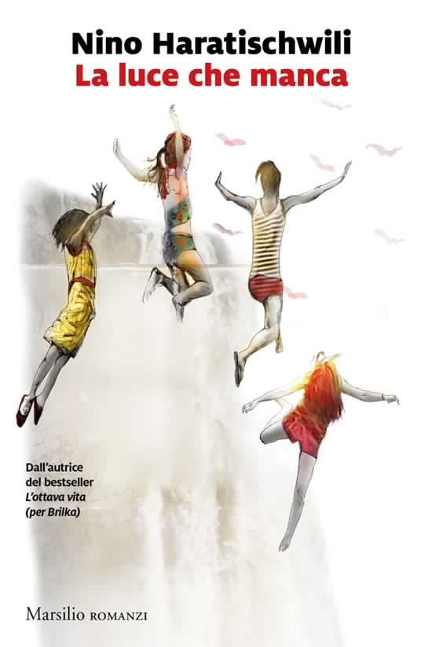

Un romanzo fiume in cui la storia irrompe in modo drammatico nella vita del singolo, un quartetto di bambine che somiglia all’amica geniale elevato alla seconda, un personaggio principale che, arrivato alla mezz’età, deve ancora chiudere i conti col passato. Questi sono gli ingredienti dell’ultimo romanzo dell’acclamata Nino Haratischwili, “La luce che manca”.
La linea narrativa è portata avanti su due piani paralleli: Qeto, la protagonsita, ripercorre gli avvenimenti della sua giovinezza attraverso le foto dell’amica Dina, morta piuttosto giovane, in una retrospettiva delle sue opere. Scopriamo un passato turbolento, fatto di instabilità politica, scontri armati, lotte per il potere nel sottobosco malavitoso con cui le quattro ragazze Queto, Dina, Nene e Ira hanno dovuto fare i conti da vicino.
Come lettori ci facciamo portare a una prosa introspettiva e piuttosto lirica attraverso le vicende del quartetto di amiche e delle loro famiglie, ciascuna con i suoi punti di luce e i suoi epiloghi anche tragici; alla fine, in mezzo alle macerie lasciate dal passato troviamo una consolazione e la possibilità di tornare alla luce nel perdono dei torti passati tra le amiche superstiti. Nella storia vedremo infatti che l’amicizia di Qeto, Ira e Nene, sebbene di lungo corso, nasconda delle crepe e un irrisolto che non è ancora stato sanato.
Il romanzo ha il respiro ampio di certa letteratura Ottocentesca, e a tratti un lirismo commuovente, ma non è senza i suoi problemi di struttura e, di conseguenza, di ritmo narrativo; su quasi settecento pagine, nulla di particolarmente rilevante accade nelle prime trecento, in cui l’autrice propende piuttosto per l’illustrazione dell’ambiente in cui vivono le protagoniste. Ne risulta quindi un inizio molto rallentato per un finale, invece, un po’ troppo tirato. Nelle ultime duecento pagine si ha la sensazione che l’autrice avesse fretta di chiudere e molti avvenimenti importanti non vengono trattati con forse la profondità che meritavano. Le trecento pagine iniziali tolgono anche tempo, a mio avviso, all’illustrazione dei sommovimenti politici che avvengono nella storia durante il tempo del romanzo, i quali potevano essere trattati con più dovizia di particolari.
Il secondo problema che ho riscontrato, in misura minore, riguarda il personaggio di Qeto, la protagonista. L’ho trovata una persona rinunciataria che si lascia vivere senza ribellarsi a nulla e scappando quando la situazione diventa troppo difficile. Io credo che il personaggio principale di un romanzo debba essere quello più interessante, e Qeto certamente non lo è, anzi è a tratti snervante per la sua passività. Altri personaggi, come per esempio Nene e Ira, compensano con più determinazione il carattere introspettivo e poco attivo di Qeto. A mio avviso, viene data invece un’ottima rappresentazione al mondo maschile i cui membri – fratelli, compagni, parenti delle protagoniste – sono schiacciati quanto le donne in una visione di tipo patriarcale e che si basa su un onore di tipo malavitoso impossibile da mettere in discussione.
Il romanzo, infine, solleva molte questioni come la difficoltà di comunicazione tra i sessi, i diritti delle donne, il codice d’onore malavitoso con cui gli uomini nella vita di queste quattro ragazze si identificano e che creano molti degli ostacoli che costituiscono la trama. Il risultato è che alle volte non si percepisce bene quale voglia essere il messaggio del testo, una de-focalizzazione che viene chiarita solo alla fine. La storia avrebbe beneficiato di una concentrazione maggiore su un tema solo, ma la difficoltà di farlo deriva dalla forma scelta dall’autore in questo romanzo. In un testo così vicino al genere autobiografico, più la forbice temporale e di maturazione del personaggio è ampia, più è difficile centrare un tema in modo univoco.
In conclusione, raccomanderei questo libro a chi ama testi in cui si vede bene l’impatto di un periodo storico sulla vita del singolo, e a chi ama dei protagonisti molto introspettivi e alle prese con un viaggio interiore. Se avete già amato L’ottava vita, della stessa autrice, invece, leggete questo romanzo senza aspettative troppo alte, perché rischiate di trovarlo deludente, essendo l’altro romanzo strutturato in modo più lineare e più facile da seguire in termini di personaggi.